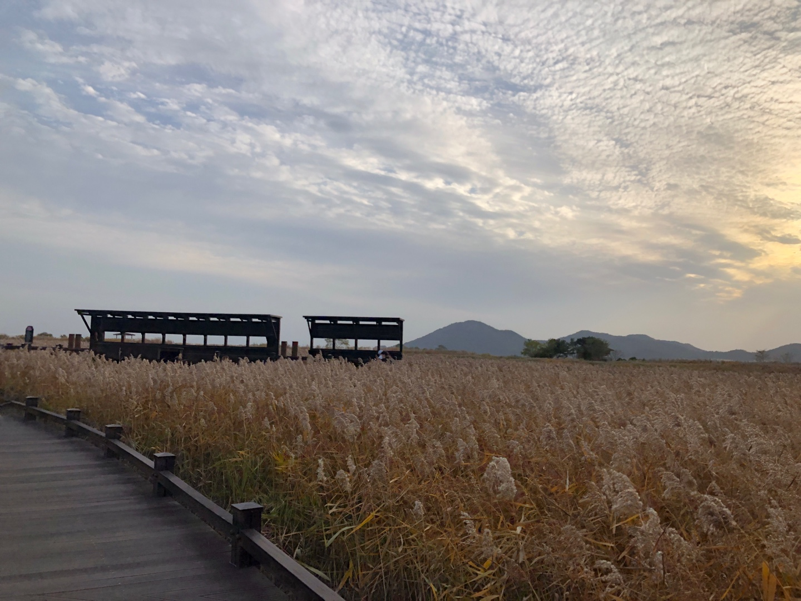

사늘한 바람과 함께 감수성을 자극하는 경치
집으로
봄
여름
가을
겨울

전라남도 순천, 여수
천고마비, 가을은 말도 살찌는 계절이라고 하죠?
한국에서 음식이 가장 맛있는 지역이 전라도인데요.
그 중에서도 순천과 여수는 가을관광명소로 유명합니다.
순천은 자연생태계 보존이 아주 뛰어난 지역으로
세계 5대 연안습지인 순천만습지, 순천만공원 등이 있고
여수는 '여수밤바다'라는 곡이 있을 정도로 바다가 아름다운 지역입니다.
두 지역에서 가을의 정취를 느껴보는게 어떨까요?